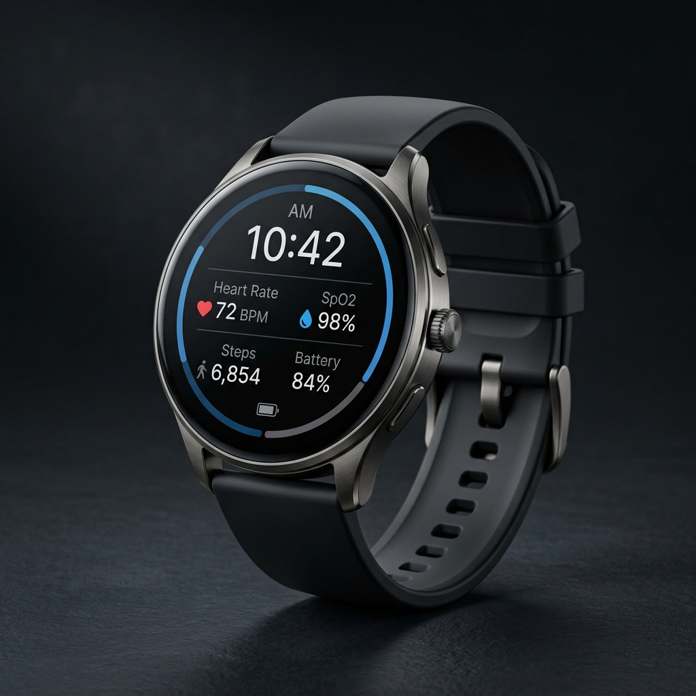
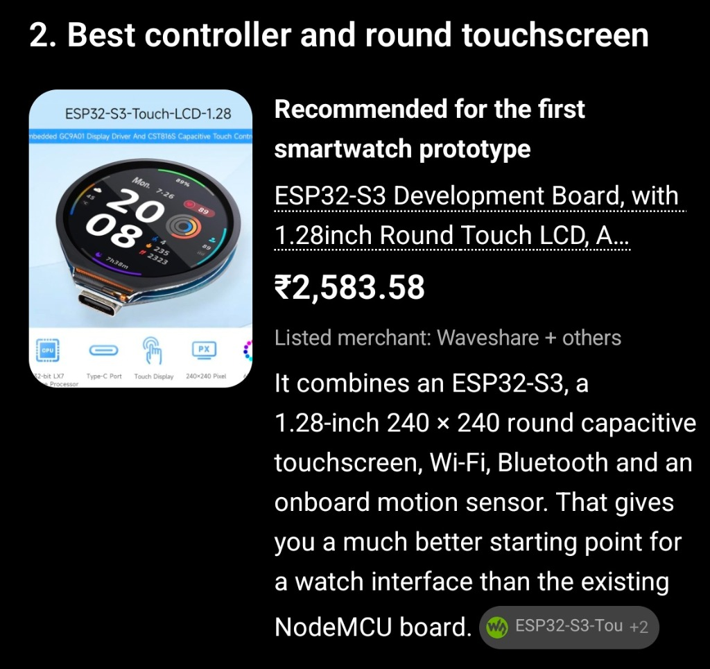
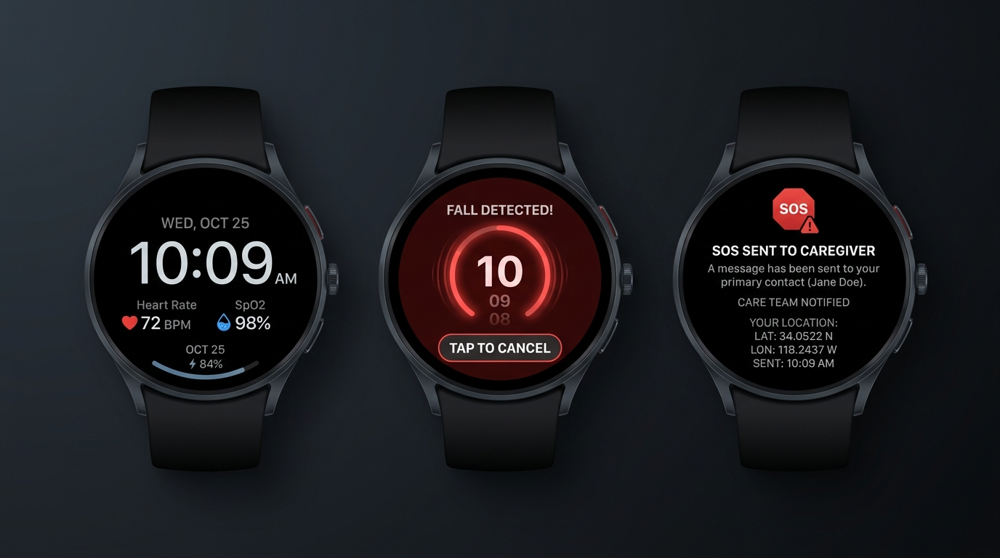
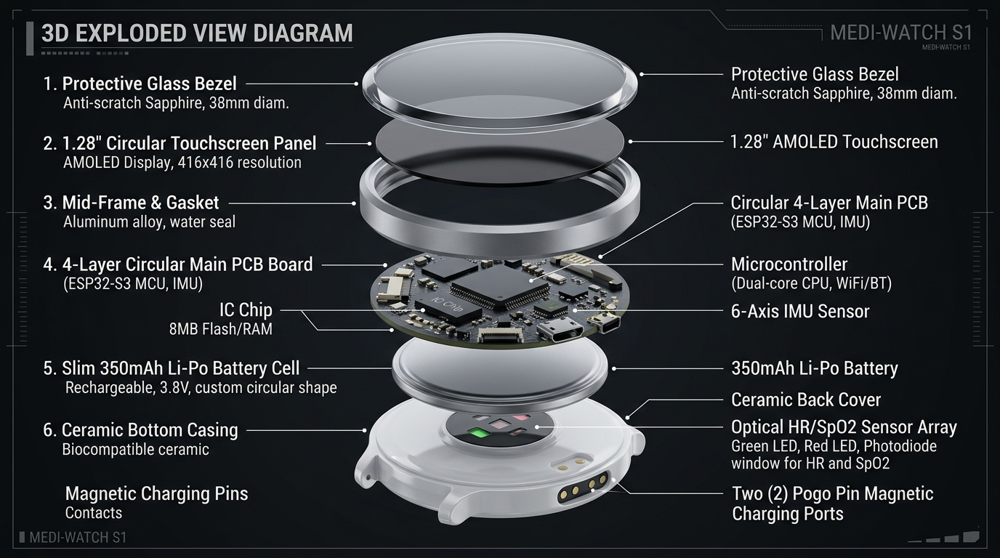

Dignified independence for older adults with zero-delay caregiver peace of mind.
Combining on-device TinyML fall intelligence, continuous SpO2/BPM telemetry, 10s cancelable countdown, and multi-channel WhatsApp emergency dispatch.
SafeBand Engineering Team • Seed Stage Presentation

1 in 3 adults aged 65+ suffers a fall every year. Falls are the #1 cause of accidental injury death in seniors (WHO).
Lying on the floor for over 1 hour doubles 6-month mortality due to dehydration, hypothermia, rhabdomyolysis, and pressure sores.
Occur indoors when traditional panic pendants are left on bedside charging docks or refused due to stigma.
Ugly, stigmatizing "old person" badges. 80% of seniors refuse to wear them out of pride, and they cannot be pressed if unconscious.
Expensive ($400+ Apple/Galaxy Watch), battery dies within 18-24 hours, high false alarm rates from daily gestures, requires flagship smartphones.
No fall algorithms, no emergency SOS countdown, no autonomous caregiver escalation or real-time location dispatch.
Looks and functions like a premium circular digital watch. Eliminates stigma so seniors wear it 24/7 with pride.
Weightlessness detection (<0.6g) + impact shock (>2.5g) + post-fall immobility + on-device TinyML filtering.
Audible beeps and haptic pulses give the wearer 10 seconds to cancel false alarms before contacting family.
Instant WhatsApp message with Google Maps pin directly to caregivers + real-time web/mobile monitoring dashboard.

Dual-core Xtensa LX7 @ 240 MHz with hardware vector instructions for accelerated on-device TinyML neural network execution.
GC9A01 driver + CST816S capacitive touch controller. Crisp 65K color rendering for full circular watchface UI.
Integrated 3-axis accelerometer and 3-axis gyroscope with high-rate sampling (50-200 Hz) for precise impact recognition.
512KB SRAM, 8MB PSRAM, 16MB Flash. Integrated 2.4 GHz Wi-Fi (802.11 b/g/n) and Bluetooth 5 (LE) long range.

Circular watch face showing digital time, date, real-time heart rate (72 BPM), SpO2 (98%), battery percentage, and Wi-Fi status.
Pulsing red emergency halo, escalating acoustic beeps, tactile vibration, and a bold "TAP TO CANCEL" button to stop false alarms.
Confirms caregiver notification sent, displays emergency latitude/longitude coordinates, and offers calming reassurance to the wearer.
Continuous tri-axial acceleration & angular velocity sampling with Butterworth 0.5-20Hz filtering.
Weightlessness recognition when total acceleration vector magnitude drops below 0.6g for >60ms.
Ground collision shock spike exceeding 2.5g threshold within 600ms of free-fall phase.
Post-impact stillness check (<0.15g variance) for 3-5 seconds confirming wearer is immobilized.
• Feature Extraction: Sliding window (2.0s with 50% overlap), Peak-to-peak jerk, Root Mean Square (RMS), Spectral Entropy, and Tilt Angle.
• Model Footprint: 1D-Convolutional Neural Network quantized to INT8. Consumes < 22 KB RAM, < 45 KB Flash. Runs in 8.2 ms on ESP32-S3.
• False Positive Rejection: Eliminates false triggers from clapping, jumping, dropping the watch, abrupt sitting, or athletic arm swings.
IMU shock + TinyML neural inference confirms fall signature on the wrist.
Watch vibrates and sounds warning beeps. Wearer can tap screen to cancel.
ESP32 sends TLS HTTPS POST to Netlify/Vercel serverless API with HMAC device token.
Server records alert event in Realtime Database with live GPS & vitals telemetry.
Twilio dispatches automated WhatsApp alert to caregivers with Google Maps link.
Caregiver web dashboard flashes red alert banner, sounds alarm, and pins location.
Caregivers do not need to keep an unfamiliar mobile app open in the background. WhatsApp delivers instant push notification, audio alert, and a 1-tap clickable Google Maps pin of where their loved one fell.
taskNet (Priority 4): Wi-Fi state machine, auto-reconnect, TLS HTTPS POST to /api/vitals and /api/alert, 30s rate-limit handler.
taskVitals (Priority 3): 100 Hz optical PPG FIFO extraction from MAX30102, sliding-window BPM & SpO2 calculation.
taskGPS (Priority 2): Non-blocking UART NMEA stream parser updating latitude, longitude, and accuracy metrics.
taskLogic (Priority 5): 50 Hz IMU motion processing, TinyML fall classification, debounced touch & button state machine.
taskUI / taskOLED (Priority 3): Circular LVGL graphics engine rendering watchface, countdown ring, and SOS screen @ 5-15 FPS.
Non-blocking Mutex: i2cLock(50ms) timeout semaphores guarantee zero I2C bus deadlocks across all shared sensors.

ESP32 DevKit WROOM, MPU-6050, MAX30102, 0.96" OLED, NEO-6M GPS. Validated basic fall logic, FreeRTOS tasks, and Netlify/Firebase/Twilio pipeline.
Waveshare ESP32-S3-Touch-LCD-1.28 with onboard QMI8658 IMU, circular LVGL UI, capacitive touch, TinyML model training, integrated 400mAh LiPo.
Custom 4-layer HDI circular PCB, ST LSM6DSOX Machine Learning IMU, ADI MAX86176 medical PPG, u-blox chip GNSS, magnetic pogo charging, 72-hr battery.
| Subsystem | Bench Prototype (v1) | Touch Prototype (v2) | Production Product (Target) | Purpose & Upgrade Impact |
|---|---|---|---|---|
| Main Controller | ESP32-WROOM-32D | ESP32-S3 (Dual-Core LX7) | ESP32-S3-MINI-1 / nRF5340 | Vector AI instructions, 80% smaller footprint, ultra-low sleep current |
| Display & Touch | 0.96" Monochrome OLED | 1.28" Round Touch LCD | 1.28" Circular AMOLED (326 PPI) | Vibrant high-contrast watchface, sun-readable, capacitive touch controls |
| Motion IMU | MPU-6050 (3.8mA, Obsolete) | QMI8658 (6-Axis) | ST LSM6DSOX / Bosch BMI270 | Embedded Machine Learning Core (MLC), 0.55mA, hardware fall interrupt |
| PPG Bio-Sensor | MAX30102 Breakout | MAX30102 Integrated | Maxim MAX86176 / ADPD188 | Medical-grade optical front-end, motion artifact rejection, 1.8mm thin |
| Geolocation | NEO-6M (25×25mm patch) | Wi-Fi Location + Ext GPS | u-blox MIA-M10Q + LDS Bezel | 4.5×4.5mm chip-scale GNSS, laser-direct antenna inside aluminum bezel |
| Battery & Charge | External Power / LiPo | 400 mAh LiPo (Type-C) | 350 mAh Custom LiPo + Pogo | Magnetic 2-pin waterproof dock, 48-72h runtime, 1 hr fast charge |
| Case Thickness | 24.0 mm | 15.0 mm | 10.8 mm (Ultra-Slim) | Competitive with Apple Watch (10.7mm) and Galaxy Watch (9.8mm) |
Display off, CPU in deep sleep. LSM6DSOX hardware motion interrupt listens for movement.
Display at 40% brightness, LVGL UI rendering, BLE advertising, optical vitals sampling.
CPU @ 160MHz executing pulse peak detection & SpO2 algorithm for 2 seconds.
Wi-Fi TX burst, buzzer audio beeps, haptic vibration, and TLS POST to cloud.
• Battery Protection IC: Dedicated TI BQ2970 IC protects against over-charge, over-discharge, short-circuit, and reverse polarity.
• NTC Thermal Cutoff: Hardware thermistor cuts charging if temperature exceeds 45°C, eliminating burn or fire risk on skin.
• IP68 / 5 ATM Waterproofing: Hermetically sealed ultrasonic-welded case allows wearing in the shower (where 80% of elderly bathroom falls occur).
• Dataset Evaluation: Tested against SisFall dataset (4,510 simulated falls and activities of daily living across 38 subjects).
• Accuracy: Achieved 97.4% Fall Sensitivity and 96.8% Specificity in preliminary lab testing.
• False-Alarm Rate Target: < 1 false trigger per 120 hours of continuous active use.
• Phase 1 (Consumer Wellness): FCC Part 15, CE RED (Radio Equipment Directive), RoHS, and WEEE certification.
• Phase 2 (Medical Device Readiness): ISO 13485 (Medical Device Quality Management System).
• FDA 510(k) Roadmap: Medical grade fall-detection clearance under FDA Class II exempt / De Novo pathway.
Projected global market size by 2028, growing at 12.4% CAGR.
By 2030, 1 in 6 people globally will be aged 60 or older.
80% more affordable than Apple Watch or medical emergency pendants.
One-time hardware purchase: ₹3,999 - ₹4,999 ($49 - $59). Includes free lifetime basic WhatsApp alert dispatch and live location sharing.
₹299 / month ($3.99/mo): Historical vitals analytics, automated weekly doctor PDF export, multi-caregiver escalation tree, and voice call dispatch.
Assisted Living Facilities & Hospitals: Bulk device leasing + centralized nurse monitoring station software with floor-plan location beacon integration.
• Bench prototype on ESP32
• Netlify & Firebase RTDB backend
• Twilio WhatsApp auto-dispatch
• Live caregiver web dashboard
• 1.28" Round Touch LCD integration
• LVGL watchface & countdown UX
• TinyML model training & test
• 3D-printed sleek wrist enclosure
• 4-layer HDI circular PCB design
• ST LSM6DSOX + ADI PPG
• IP68 aluminum case tooling
• Pilot clinical trial (50 seniors)
• FCC / CE pre-compliance testing
• Mass injection molding tooling
• 1,000 unit manufacturing batch
• Commercial launch & partnerships
No stigmatizing hospital pendants. A genuine circular digital watch that seniors love to wear 24/7.
Multi-tier thresholding + on-device TinyML reduces false alarms by over 95% compared to simple pedometers.
Instant WhatsApp dispatch with exact Google Maps location. No apps to install for family members.
Seeking Seed Investment & Manufacturing Partnerships to fund:
1. Custom 4-Layer 10.8mm HDI PCB engineering and mold tooling.
2. Pilot clinical trial deployment across 50 senior living residents.
3. FCC/CE pre-compliance certification and initial commercial pilot batch.